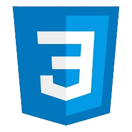

Tech Stack

JavaScript

Python

HTML

CSS
Every morning, the first thing I do when I wake up is play the daily Wordle. After solving it, however, I find myself wanting to play more and with a higher degree of difficulty. I developed Squardle for this reason, and I enjoy being able to play it more than once a day. If you enjoy Wordle-like games or solving a puzzle, try it out!
JavaScript
Python
HTML
CSS
Official Wordle Word List: Used BeautifulSoup to develop a Python script to extract the exact list of words used in Wordle.
Visual Feedback: Wordle-like color-coded system to show the user their status in the game.
Modals: Different modals pop up for different functionalities. Tutorial, win, and lose modals.
Multiple Forms of Input: Supports both physical keyboards and an on-screen keyboard.
Error Handling: Comprehensive error handling to ensure the user has a pleasant experience.